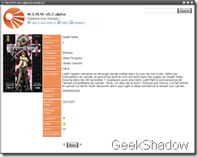

12 décembre 2007
WIMM - Avancement du projet...
Comme le projet avance bien, je me décide à poster un screenshot du logiciel ^^
Bon, à partir de ça, vous n'aurez pas trop de mal à trouver de quoi il s'agit.



Un site avec tout ce qui va bien est en préparation, je prépare aussi un serveur subversion pour le travail collaboratif... N'hésitez pas à laisser des commentaires et critiques :) PS : L'interface est en anglais pour le moment mais le logiciel sera bien entendu disponible en français ^^ Lisez aussi le topic précédent.
Commentaires 5